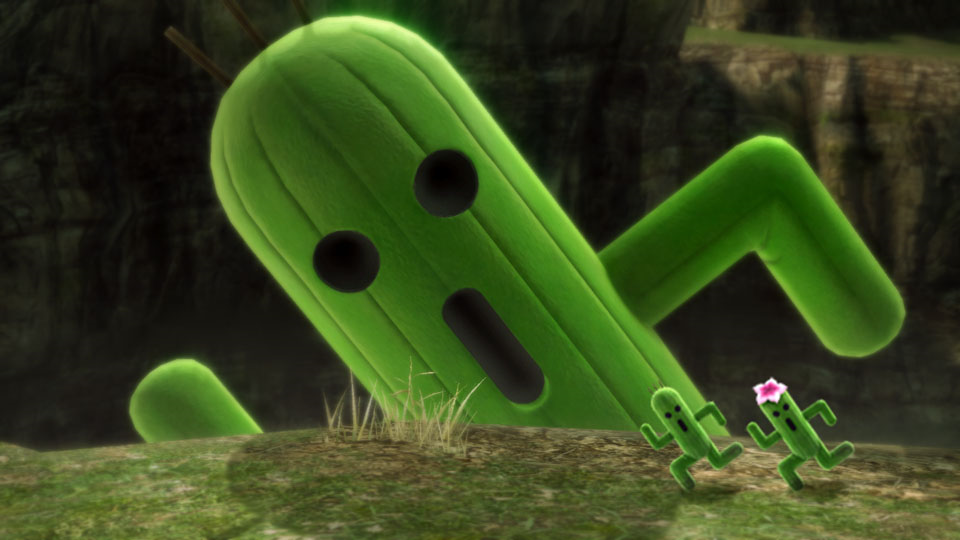

Desde que el Primero hizo que Vheil fuese más amigable para el resto de seres, las criaturas que antes habitaban el clima volcánico y angosto han tenido que cambiar y aclimatarse al nuevo. Por ello, todavía los eruditos siguen estudiando y descubriendo nuevas especies y nuevas adaptaciones de criaturas antológicas.
Existen criaturas como los Kappa que aterrorizan a los niños en los ríos. Y después tenemos a un Kraken (?).
Los grandes Garudas surcan los cielos mientras las gallinas miran hacia arriba con envidia pura y dura.
Un cactus viviente, un gusano de las arenas y los famosos moradores de las mismas. Todos tienen las bocas resecas.
Son seres que por regla general tienen la cabeza muy dura, como los Rocks o los cocos.
Tan transparentes como las mentiras, los fantasmas, espectros y Obakes siembran el terror y después lo cose- ¡Pero que se está escapando de la página el fantasma! ¡Vuelve aquí!